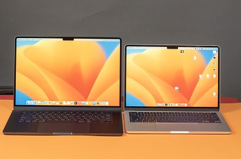
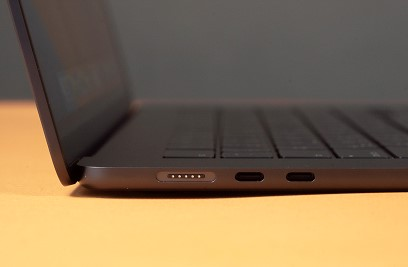
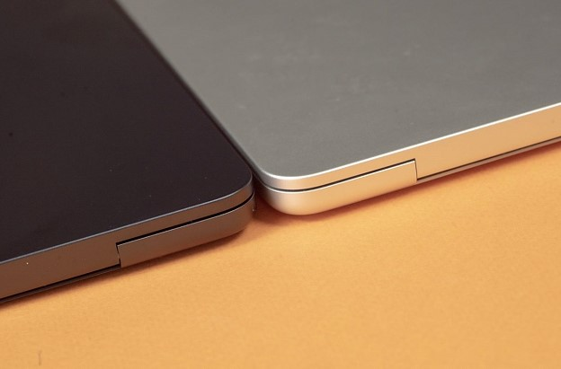
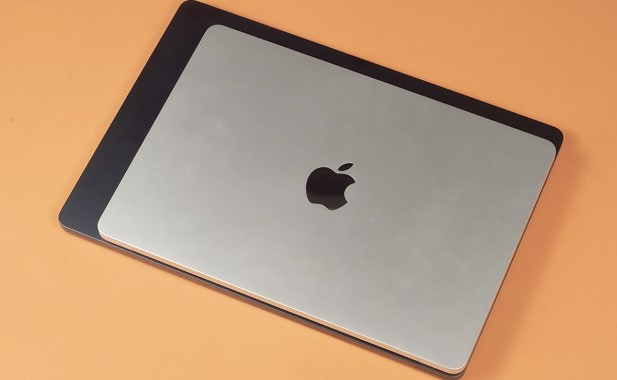
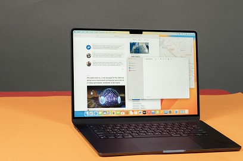

kz


MacBook Air 15: Apple компаниясының ноутбуктардың өзгерген бүркіті
Apple компаниясының инновациялары тәуелді өтірікті жаңа MacBook Air 15 ноутбукты дүниеге таныстырады. Бұл ноутбук тек құрал емес - бұл Apple компаниясына әнсалықты қайтаратын сапалы, көркем стиль мен алдыңғы технологияларды қоса түрік жұмыстар.
Компанияның ең жақсы салтанаттарына негізделгенде, MacBook Air 15 пайдаланушыларын көңіл бөлдіретін ноутбук. Оның ультратән корпусы, ерекше орнату және қалпырақ Retina көрінісі ноутбуктар әлемінде тартымды болмайды.
15-дюймдік ұлғайтуымен көріністі көрсететін дисплей сізге жарық және таза кескіндер береді, фильмдерді көру, суреттерді редакциялау және ноутбукта жұмыс істеу күтінішті және ыңғайлы жасайды.
Бірақ MacBook Air 15 не істеу күші ешқашан маңызды емес ба? Оның қолы - Intel Core i7 соңғы процессоры, Intel Iris Xe графикалық жаңартқыш немесе AMD Radeon Pro кездесуімен. Бұл ноутбук кез келген сұрқылаулы бағдарламаларда деңгейленген бекіткендігіне көз жеткізеді.
Бірақ бұл тек ешқандай жоқ. MacBook Air 15-тең автономиялық жұмыс уақыты да ұзар. Оптималданған энергия қолдану және жетікті батарея ноутбукты ерекше шаруашылықтан азған деп айтуға мүмкіндік береді.
Сондай-ақ, жаңа MacBook Air 15 ширекті жұмыс порттары мен интерфейстердің арасында Thunderbolt 4 және USB-C де бар, бұл оларды өзге құрылғылар мен перифериялармен қосу үшін универсалды қыледі.
